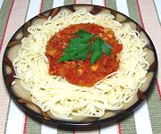

|
Bacon Sauce for PastaItaly - Sugo Affumicato | ||||
| Makes: Effort: Sched: DoAhead: |
2 cups ** 50 min Yes |
Easy to make and delightfully flavorful but best as a pasta course rather than main courses (unless you really love the taste of calories, yum!). Flavor depends on the quality of the bacon. | |||
|
|
8 12 1 1/3 1/4 |
oz oz can t t |
Bacon, smoked Onion Tomatoes, 28oz Salt Pepper |
Prep - (17 min)
|